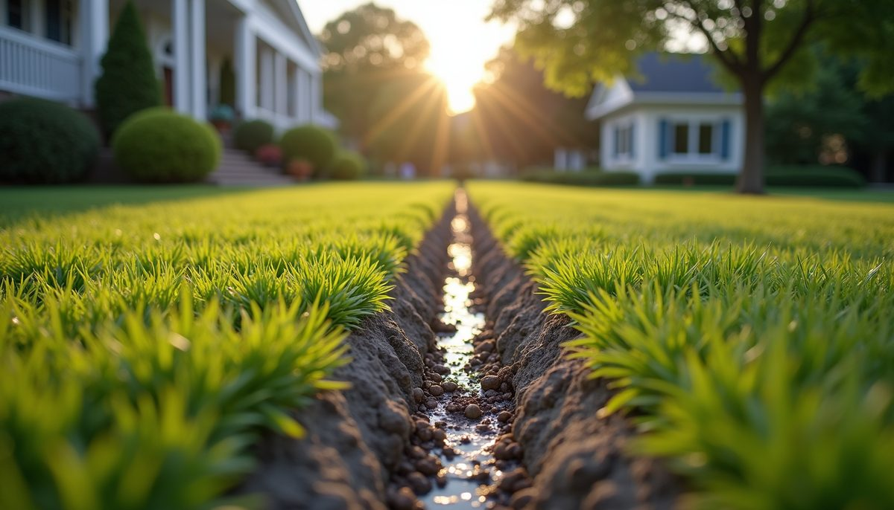

This article first appeared in the Environmental Construction Services resource library. General guidance is provided for education; actual site conditions and project requirements vary.
Proper drainage is vital for maintaining the health and safety of any property. Water that pools or flows improperly can cause damage to foundations, landscaping, and even indoor spaces. We want to share clear, practical information about essential drainage solutions and how to approach drainage system installation effectively. This knowledge will help you protect your property and avoid costly repairs.
Understanding Essential Drainage Solutions
Drainage solutions are designed to manage water flow around your property. They prevent water from accumulating where it can cause harm. There are several types of drainage systems, each suited to different needs and environments.
Some common drainage solutions include:
- Surface drains: These collect water from paved areas or lawns and direct it away.
- Subsurface drainage: Underground pipes or tiles collect and redirect water away from foundations or persistently wet ground.
- French drains: Trenches filled with gravel and a perforated pipe redirect groundwater.
- Channel drains: Long, narrow drains capture surface water along driveways or walkways.
- Gutter and downspout systems: Roof runoff is collected and carried away from the building.
- Sump pumps: These move water out of basements or other low-lying areas when a gravity outlet is not available.
Choosing the right solution depends on your property’s layout, soil type, and typical weather conditions. Clay soils generally retain water longer than sandy soils and may require more extensive drainage planning.
Planning Your Drainage System Installation
Planning is the first step toward a successful drainage system. We recommend starting with a thorough assessment of your property. Look for areas where water tends to collect or flow excessively. Note any signs of damage such as soil erosion, foundation cracks, or mold growth indoors.
Warning signs can include puddles that remain for days after rain, water stains on foundation walls, persistently soggy ground, and dampness in a basement or crawl space.
Next, consider the following:
- Local regulations: Check if there are any permits or codes you must follow.
- Water flow patterns: Follow how water moves naturally during storms and plan a route toward an appropriate, locally approved discharge point.
- Soil type and slope: These affect how water drains naturally.
- Existing drainage: Identify if current systems are working or need upgrades.
- Safe discharge point: Plan where collected water can be released lawfully without creating a new problem.
- Positive grade: Where site conditions allow, shape the ground so runoff moves away from structures.
- Materials and access: Select durable components suited to local soil and weather, and keep service points reachable.
Once you have this information, you can decide which drainage solutions fit best. We often suggest combining multiple methods for comprehensive protection. For example, surface drains can handle rainwater runoff, while French drains manage groundwater.
If you prefer professional help, scheduling a drainage system installation with experienced contractors ensures the job is done correctly and efficiently.

How much does a new drainage system cost?
Cost is a common concern when considering drainage improvements. The price varies widely based on the system type, property size, and complexity of the installation.
Here are some general cost factors:
- Area and system type: The amount of ground being drained and the selected surface or subsurface system affect the scope.
- Site conditions: Soil, slope, equipment access, and the available outlet influence the work required.
- Materials: Pipes, gravel, concrete, and drainage grates.
- Labor: Excavation, installation, and cleanup.
- Permits and inspections: Required by local authorities.
- Additional features: Pumps, filters, or landscaping restoration.
Online price ranges cannot account for the system type, excavation, access, soil, outlet, restoration, and materials a specific property requires. A site-specific estimate is the dependable way to understand current project cost.
We recommend obtaining multiple quotes and asking for detailed estimates. This helps you understand what is included and avoid surprises. Remember, investing in quality drainage solutions can save money by preventing water damage and costly repairs later.
Maintenance Tips for Long-Term Drainage Health
Installing a drainage system is only part of the process. Regular maintenance keeps it functioning well over time. Here are some practical tips:
- Clear debris: Remove leaves, dirt, and other blockages from surface drains and grates.
- Clean gutters and downspouts: Keep roof-runoff paths open and confirm that downspouts discharge where intended.
- Inspect pipes: Check for cracks or clogs in underground pipes.
- Inspect open channels and outlets: Watch for blockage, damage, or erosion and make repairs as needed.
- Keep access points clear: Leave cleanouts and service points unobstructed.
- Monitor water flow: After heavy rain, observe how water moves and adjust if pooling occurs.
- Service sump pumps: Test pumps regularly and replace batteries if needed.
- Trim vegetation: Roots can damage pipes or block water flow.
Routine maintenance prevents small issues from becoming major problems. It also extends the life of your drainage system and protects your property investment.
Why Choose Professional Drainage Services?
While some drainage tasks can be DIY projects, professional services offer several advantages. Experts have the knowledge, tools, and experience to design and install systems tailored to your property’s unique needs.
Benefits of hiring professionals include:
- Accurate assessment of drainage problems.
- Proper installation following local codes.
- Use of high-quality materials.
- Efficient project completion.
- Ongoing support and maintenance advice.
We appreciate the trust placed in us to deliver reliable, personalized outdoor solutions. If you want peace of mind and lasting results, consider scheduling a drainage system installation with a reputable company.
Taking the Next Step for Your Property’s Drainage
Water management is essential for protecting your home or business. By understanding essential drainage solutions and planning carefully, you can avoid damage and maintain a healthy environment.
We encourage you to evaluate your property’s drainage needs and explore options that fit your situation. Whether you choose to install a simple surface drain or a comprehensive system, taking action now will pay off in the long run.
If you have questions or want expert assistance, please reach out. We are here to help you create effective, lasting drainage solutions that keep your property safe and dry. Thank you for considering these important steps toward better water management.
Reproduced from Environmental Construction Services’ public blog (environmentalconstructions.com). Part of this private website concept.